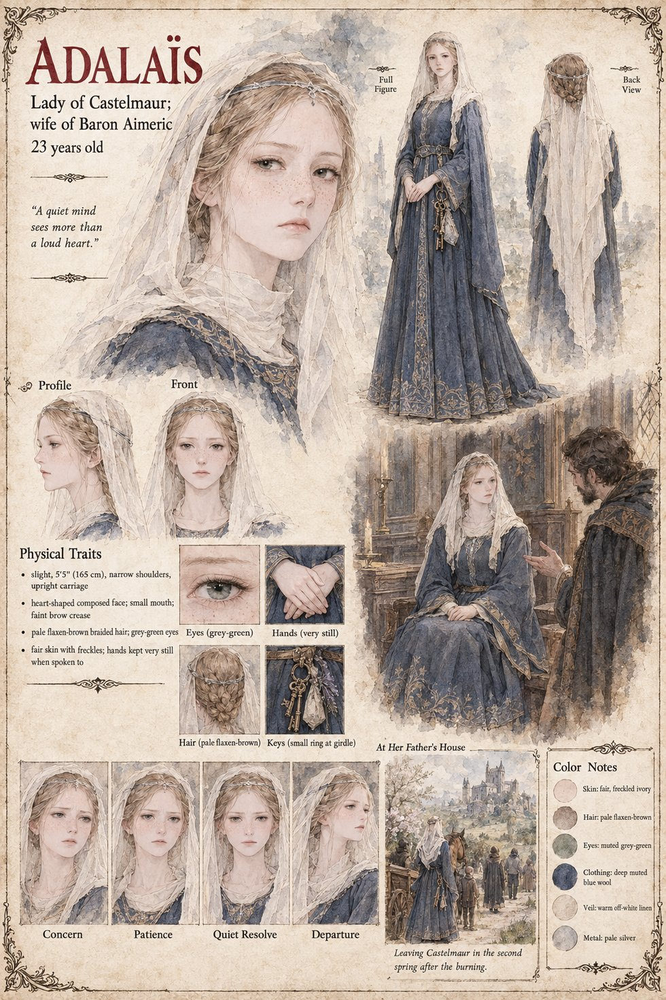

Adalaïs
Lady Adalaïs · wife of Baron Aimeric of Castelmaur · 23 years old
The baron's wife, twenty-three to his fifty, a quiet fair woman whom he did not understand and was a little afraid of. The manuscript names her twice. When Aimeric sits up at night in the long cold bedchamber at the top of the keep reading his brother's letters aloud to the hound, she is not mentioned; when he raises the tolta to a sixth and drafts the writ in his own crabbed hand, she is not asked; when he does, for the first time in his life, an arithmetic that does not end where he planned, she is not at the window. The second naming comes in the list of what Castelmaur loses: three villages that empty in the night, the weir of Sarrac and the ford below it, two more villages that transfer themselves to the count's writ, and, in the second spring, a wife. Lady Adalaïs went home to her father in the second spring. The baron dies in the third winter in a half-emptied hall, with the hound.
The manuscript does not name her father, give her a line to speak, or say what she thought of the burning of Vilarnau. The sheet gives her one, A quiet mind sees more than a loud heart, which is its own and not the manuscript's. It draws her slight, 5 ft 5 in, with narrow shoulders, an upright carriage, a heart-shaped composed face with a small mouth and a faint crease between the brows, a braid of pale flaxen-brown hair under an off-white veil and a thin silver circlet, grey-green eyes, fair freckled skin, hands kept very still when she is spoken to, a small ring of keys at her girdle and a gown of deep muted blue wool. Its two scenes are At Her Father's House, in which she sits in a dark panelled room under a candle-stand while a bearded man in a heavy cloak speaks to her with a hand out, and Leaving Castelmaur in the second spring after the burning, in which she walks away from a castle on its hill in veil and blue beside a cart and a handful of figures; the bearded man is not named. Her expression panels run Concern, Patience, Quiet Resolve and Departure.
“A quiet mind sees more than a loud heart.”